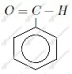
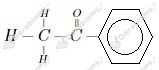

Zaczynamy od obliczenia masy roztworu:
Liczymy stężenie:
Odpowiedź: Stężenie procentowe nasyconego wodnego roztworu fenolu w temperaturze 20oC wynosi 7,6%.
a)
b)
c)
d)
e)

f)
g)
h)

a) formaldehyd
b) acetaldehyd
c) aldehyd propionowy
d) aldehyd masłowy
Aldehydy: a, c, e , f
Ketony: b, d
Pary izomerów tworzą związki b i e oraz d i f.
Nazwy:
a) metanal
b) propan-2-on
c) benzenokarboaldehyd
d) butan-2-on
e) propanal
f) butanal
1.
2.
3.
4.
5.
6.
7.
8.
9.
10.
11.
12.
13.
14.
a)
b)
c)
d)
e)
Wzór aldehydu:
Nazwa aldehydu: etanal
a)
Nazwa organicznego produktu: etanal
b)
Nazwa organicznego produktu: etanol
c)
Nazwa organicznego produktu: etanal
d)
Nazwa organicznego produktu: kwas propanowy
e)
Nazwa organicznego produktu: metanal
f)
Nazwa organicznego produktu: kwas propanowy
g)
Nazwa organicznego produktu: propanon
h)
Nazwa organicznego produktu: polioksymetylen
i)
Nazwa organicznego produktu: metanal
a)
1.
2.
3.
b)
1.
2.
3.
4.